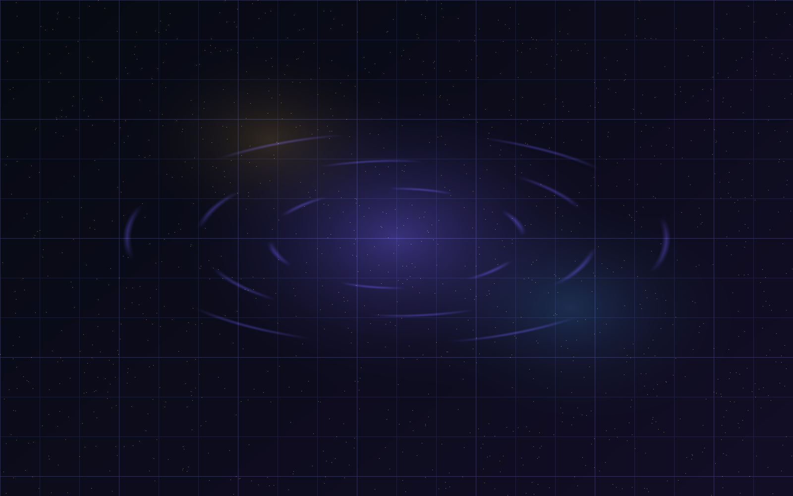

正在接入人生模拟系统...
权限验证通过
Life Sandbox Engine v1.0
你的人生不止一条路径
系统正在生成你的可能世界

LIFE SANDBOX · RPG EDITION
一台正在低声运转的人生模拟引擎，等你放入第一枚变量。
不是测试，是一次存档读取。
ORACLE TABLE OPEN
雾已经升起来了。你只需要决定：让沙盘同时照见现实和预兆，还是把一个问题交给夜色直接起卦。
TIME HEXAGRAM
不用填写完整档案。写一句最近最想问的事，或先点一张问题牌，系统会按当前时间起卦。
人生信息采样
SIMULATION RUNNING
SAVE FILE GENERATED
LV28 · 新一线 · 平衡型玩家
沙盘已经读到你的当前章节。真正重要的不是立刻选择哪条路，而是看见哪条路正在反复召唤你。
份人生说明书已在本机生成
玩家类型
你适合用可控试错换取成长窗口。
命运签
理性人生模拟
随机人生事件
LIFE SANDBOX
夜里，你把一个没有说出口的问题放进沙盘。第一盏灯亮起时，系统读到了你的岔路。
人生不是选择题，是存档游戏。